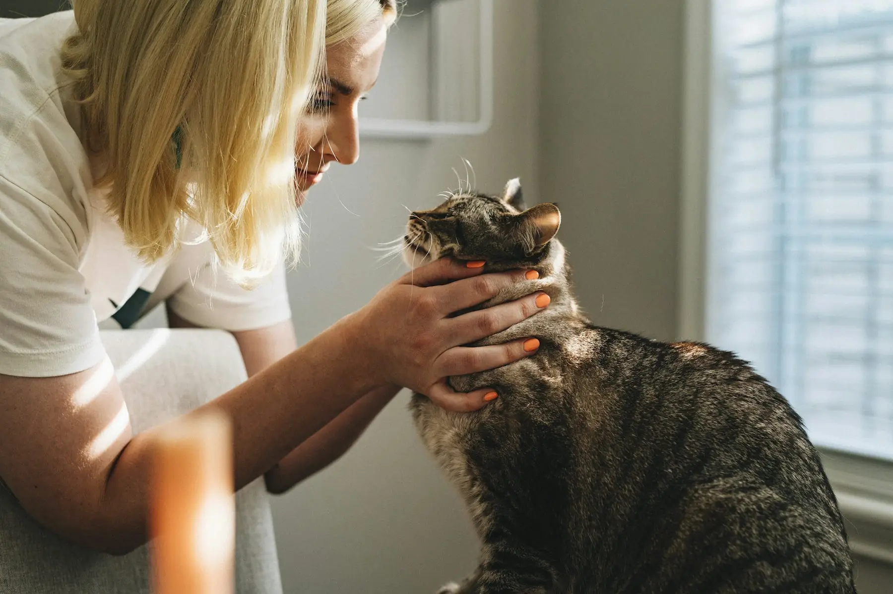
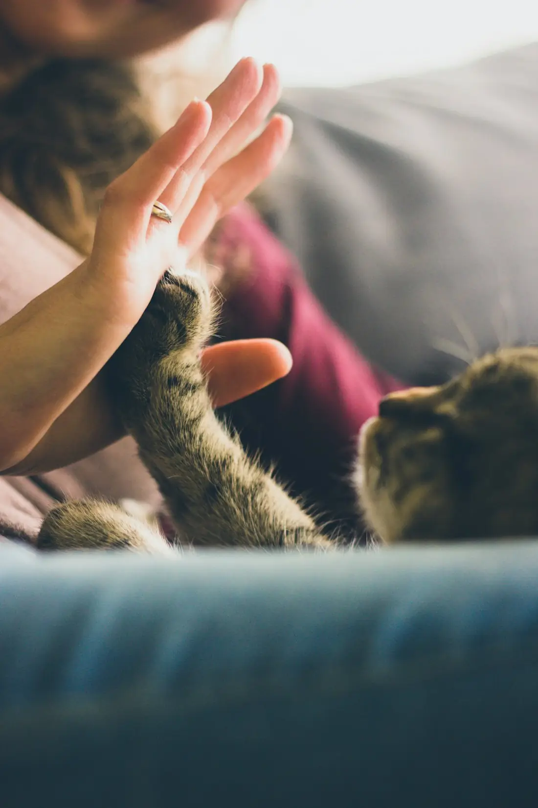
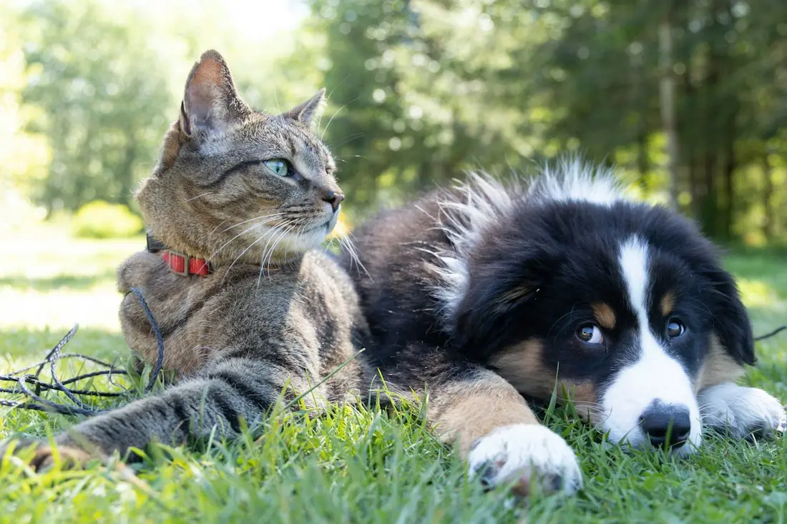

Acele etmeyen,
her adımı anlatan veteriner.
Üsküdar'da kedi ve köpekler için muayene, aşı, cerrahi ve tahlil. Ne gördüğümüzü ve neden önerdiğimizi baştan konuşuruz.
Hizmetler
Koruyucu bakımdan ameliyata kadar, kedi ve köpeğinizin ihtiyacı olan her şey aynı çatı altında.
-
Genel muayene
Yıllık kontrol, kilo ve deri takibi. Gerekirse tahlil önerisi, nedeniyle birlikte.
-
Aşı ve parazit
Yaşa ve yaşam tarzına göre aşı takvimi. Zamanı gelince biz hatırlatırız.
-
Kısırlaştırma ve cerrahi
Ameliyat öncesi tahlil, anestezi takibi ve taburcu sonrası kontrol.
-
Laboratuvar ve görüntüleme
Kan tahlili, ultrason ve röntgen ile tanı.
-
Diş bakımı
Diş taşı temizliği, ağız içi kontrol ve kötü koku şikâyetleri.
-
Beslenme danışmanlığı
Kilo, alerji ve yaşa göre mama seçimi ve porsiyon planı.

Örnek görsel
Hakkımızda
İdaia, Üsküdar'da kedi ve köpekler için hizmet veren bir veteriner kliniği. Muayenede ne gördüğümüzü, hangi tahlili neden istediğimizi ve tedavinin ne kadar tutacağını başlamadan konuşuruz.
Hayvanınızı tanıyan bir ekip, her gelişinizde baştan anlatmak zorunda kalmamanız demek. Kayıtlarını tutar, aşı ve kontrol zamanlarını biz takip ederiz.
Hem profesyonellik hem de hayvan sevgisi açısından güven veren bir yer.
Google'daki bir değerlendirmeden
Neden İdaia?
-
Her adımı anlatırız
Tedavi seçeneklerini ve maliyeti işleme başlamadan sizinle konuşuruz.
-
Akşam 21:00'e kadar açık
İş çıkışında, hafta sonu dahil her gün gelebilirsiniz.
-
458 değerlendirme, 4,9 puan
Hayvan sahiplerinin Google'da bıraktığı yorumlar kendini anlatıyor.
-
Sakin bir muayene
Hayvanınızın stresini azaltmak için acele etmeden, nazikçe çalışırız.
Randevusuz gelebilir miyim?
Gelebilirsiniz. Randevu alırsanız bekleme süreniz kısalır. Formdan, telefondan ya da WhatsApp'tan randevu alabilirsiniz.
Hangi hayvanlara bakıyorsunuz?
Ağırlıklı olarak kedi ve köpek. Kuş, tavşan ve diğer türler için önce telefonla bilgi alın.
Ücreti önceden öğrenebilir miyim?
Evet. Muayene başında, gerekecek tahlil ve tedavilerin tahmini maliyetini paylaşırız.
Aşı zamanlarını nasıl takip edeceğim?
Hayvanınızın aşı takvimini kaydederiz. Zamanı yaklaşınca size mesajla hatırlatırız.
Kısırlaştırma için nasıl hazırlanmalıyım?
Ameliyattan önceki gece yemeği keseriz, saatini randevuda söyleriz. Öncesinde kısa bir kontrol ve tahlil yaparız.
Randevu alın
Formu doldurun, sizi arayıp saati birlikte belirleyelim. Acil bir durumda formu beklemeden arayın.
- 0532 290 44 32
- WhatsApp'tan yazın
- info@idaiaveteriner.com
- Avcı Sk. No:4 D:A, Üsküdar / İstanbul